AstroNáutica
Home
Sobre
Projetos
Contato
Explore a questão intrigante da existência de vida em outros planetas ou em outros cantos do universo. Discuta as pesquisas científicas relacionadas à busca por sinais de vida extraterrestre e os debates em torno dessa questão.
Clique para mais
